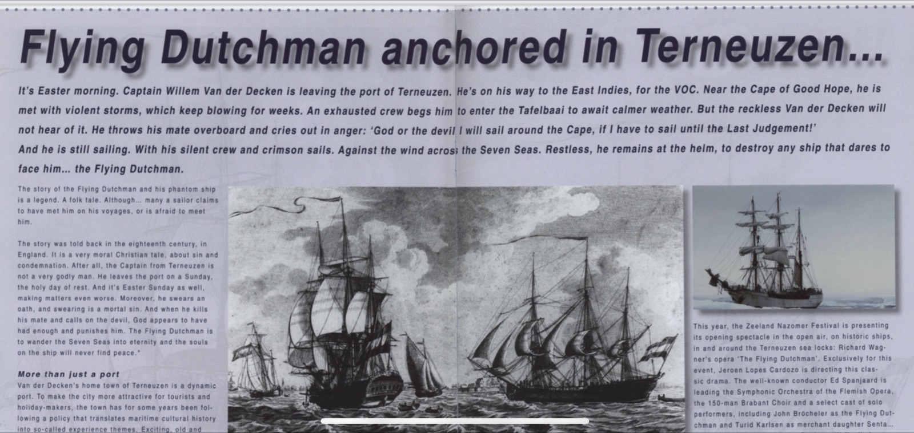

Op Paasmorgen vaart kapitein Willem Van der Decken de haven van Terneuzen uit. Op weg naar Oost-Indie, voor de VOC. Bij Kaap de Goede Hoop komt hij in hevige stormen terecht die weken aanhouden. De uitgeputte bemanning smeekt hem om in de Tafelbaai beter weer af te wachten. De roekeloze Van der Decken wil er niets van weten. Hij gooit zijn stuurman overboord en roept woedend uit: “God of de duivel, de kaap vaar ik om, al moet ik varen tot het laatste oordeel!” Sindsdien zwerft hij met zwijgende bemanning en vuurrode zeilen tegen de wind in over de wereldzeeën. Rusteloos staat hij aan het roer, klaar om ieder schip dat hij tegenkomt in het verderf te storten… die Vliegende Hollander.
Waar of niet waar?

Het verhaal van de Vliegende Hollander op zijn spookschip is een sage, alhoewel…menig zeeman beweert hem op zijn reis wel eens gezien te hebben of bang te zijn om hem tegen te komen. Eind 18e eeuw komt het verhaal al voor op schrift, in Engeland. Het is vooral een christelijke vertelling over zonde en doem. De Terneuzense kapitein is weinig godvrezend. Hij vaart uit op zondag, de heilige rustdag. Paaszondag, een heilige feestdag, maakt het nog erger. Bovendien zweert hij een eed, net zo erg als vloeken. Als hij dan ook nog zijn stuurman vermoordt en tenslotte zelfs de duivel aanroept, vindt God het welletjes en straft hem. De Vliegende Hollander moet eeuwig ronddolen en de zielen op het schip zullen nooit rust vinden. <bron: Meertens Instituut>
Meer dan haven alleen
Van der Decken’s geboortestad Terneuzen is een dynamische havenstad. Echter, om de stad aantrekkelijker te maken voor toeristen en recreanten, voert de gemeente Terneuzen sinds enkele jaren een beleid dat de maritieme cultuurhistorie vertaalt in zogenaamde belevingsthema’s. Spannende, oude en unieke verhalen die kenmerkend zijn voor Terneuzen en omgeving worden uitgewerkt tot concrete activiteiten, evenementen en voorzieningen; naast trekkers als funshoppen, familyentertainment, sport en spel. Behalve de succesvolle Havendagen in juni heeft dit beleid geresulteerd in een nieuw meerdaags evenement: het Vliegende Hollander Festival in september. Gemeente, ondernemers, maatschappelijke organisaties, scholen en verenigingen ontwikkelden samen een uitgebreid programma van muziek, zang en dans, tentoonstelling en theater, sport en spel, culturele wandelingen en culinaire producten. In een persoonlijke uitnodiging roept burgemeester Lonink van Terneuzen jong en oud op om actief deel te nemen aan het festival, en onthult hij het thema van dit jaar: piraten.
Vliegende Hollander komt thuis
Voor het culturele hoogtepunt is nog een ander festival in Terneuzen neergestreken, het Zeeland Nazomer Festival. Dit veelgeprezen festival produceert als enige in Nederland zelf zijn voorstellingen en gebruikt het kenmerkende Zeeuwse landschap als decor. Muziek aan de waterkant, dans in een middeleeuwse abdij, theater in een vismijn, beeldende kunst in de polder. Elk jaar staat heel de provincie Zeeland in de eerste week van september bol van cultuur met een hoofdletter ‘C’.
Dit jaar brengt het Zeeland Nazomer Festival haar openingsspektakel rondom de zeesluizen van Terneuzen, in de open lucht, op historische schepen: Richard Wagner’s opera ‘De Vliegende Hollander’. Exclusief voor dit evenement regisseert Jeroen Lopes Cardozo deze klassieker. De bekende dirigent Ed Spanjaard leidt het Symfonisch Orkest van de Vlaamse Opera, het 150-koppige Brabantkoor en een uitgelezen cast solisten, waaronder John Bröcheler als de Vliegende Hollander en Turid Karlsen als koopmansdochter Senta…
Want, we tekenen september 2006, na jaren dolen wordt Van der Decken uiteindelijk toch nog gered…door de liefde. Nota bene in zijn eigen geboorteplaats, Terneuzen!
Dit verhaal verscheen in het Engels in het promotiemagazine van de Zeeuwse havens en havenbedrijven Zeeland Port News nr. 2 jaargang 2006.